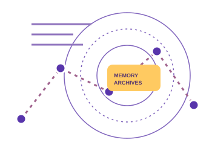

PUBLIC HISTORY
Apri risorsa Il nostro Centro Studi
Presentazione istituzionale e approccio alla storia pubblica.
Una selezione di materiali consultabili, documenti pubblici e strumenti per esplorare il nostro lavoro.
I link rimandano ai materiali già pubblici. Un archivio documentale dedicato potrà essere sviluppato con contenuti e diritti verificati.
Presentazione istituzionale e approccio alla storia pubblica.
Descrizione pubblica del laboratorio permanente e del metodo.
Esperienza interattiva di ricerca e verifica delle fonti.
Documento etico pubblicato sul precedente sito istituzionale.
Informativa pubblicata sul precedente sito istituzionale.
Ogni testimonianza richiede un contesto, un consenso consapevole e un processo di restituzione rispettoso delle persone.
Esplora il nostro metodo
Hai un documento, una collezione o una storia da proporre? Scrivici prima di inviare materiali personali.